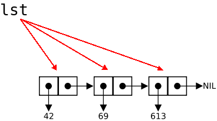

val distance = {
val dx = x2 - x1
val dy = y2 - y1
math.sqrt(dx * dx + dy * dy)
}
def digitsum(n: Int): Int = if (n == 0) 0 else {
val last = n % 10
val rest = n / 10
last + digitsum(rest)
}
def distance(x1: Int, x2: Int, y1: Int, y2: Int) = {
def sq(x: Int) = x * x
math.sqrt(sq(x2 - x1) + sq(y2 - y1))
}
def digitsum(n: Int) = {
@tailrec def digitsumHelper(n: Int, sum: Int): Int = if (n == 0) sum else
digitsumHelper(n / 10, sum + n % 10)
digitsumHelper(n, 0)
}
@tailrec tells Scala that you believe that the recursion can be rewritten as a loop.
def digitsumHelper(n: Int, sum: Int): Int = {
start:
if (n == 0) sum else {
n = n / 10
sum = sum + n % 10
goto start
}
}
:: (pronounced cons) Nil) or has a head and tail
val lst = List(1, 4, 9) lst.head // 1 lst.tail // List(4, 9) lst.tail.tail.tail // Nil
:: to build lists
0 :: lst // List(0, 1, 4, 9)
def sum(lst : List[Int]) : Int =
if (lst.isEmpty)
0 else
lst.head + sum(lst.tail)
:: to recursively build lists
def squares(n : Int) : List[Int] =
if (n == 0)
List(0) else
n * n :: squares(n - 1)
lst.tail doesn't make a new list—it is a reference to the tail cell

def append(a: List[Int], b: List[Int]): List[Int] = if (a.isEmpty) b else a.head :: append(a.tail, b)
def reverse(a: List[Int]): List[Int] = if (a.isEmpty) a else append(reverse(a.tail), List(a.head))
reverse((1 to 1000000).toList) (1 to 1000000).toList.reverse
def reverse(a: List[Int]) = {
@tailrec def reverseHelper(a: List[Int], reversed: List[Int]): List[Int] =
if (a.isEmpty) reversed else reverseHelper(a.tail, a.head :: reversed)
reverseHelper(a, Nil)
}

lab2/report.txt inside the Git repo. Include the coder's name in the report! 1 :: 2 :: 3 :: Nil? (Just ask the Scala interpreter)1 :: "Hello" :: Nil?1 :: 2 :: 3? Why?"San", "José", "State", "University" using a list constructor? (Be sure to try your answer in the Scala interpreter)"San", "José", "State", "University" using the cons (::) operator? concat that concatenates all strings in a List[String], yielding a String. Hint: (1) String concatenation is + in Scala, just like in Java (2) concat(Nil) is "". (3) Think about concat(lst) in terms of lst.head, lst.tail.
Give the code of your function.
concat(List("San", "José", "State", "University"))?concat so that it adds spaces between the strings (i.e. so that concat(List("San", "José", "State", "University")) is "San José State University" but not "San José State University " or " San José State University"? pairs(List(1, 2, 3)) produce?squares function from the lecture without recursion?flatten method flattens out a list of lists into a list. To see what it does, just try out
List(List(1, 2),List(3, 4, 5)).flattenAssuming that you are allowed to use this method, how can you implement the
pairs function of Step 3 without recursion?